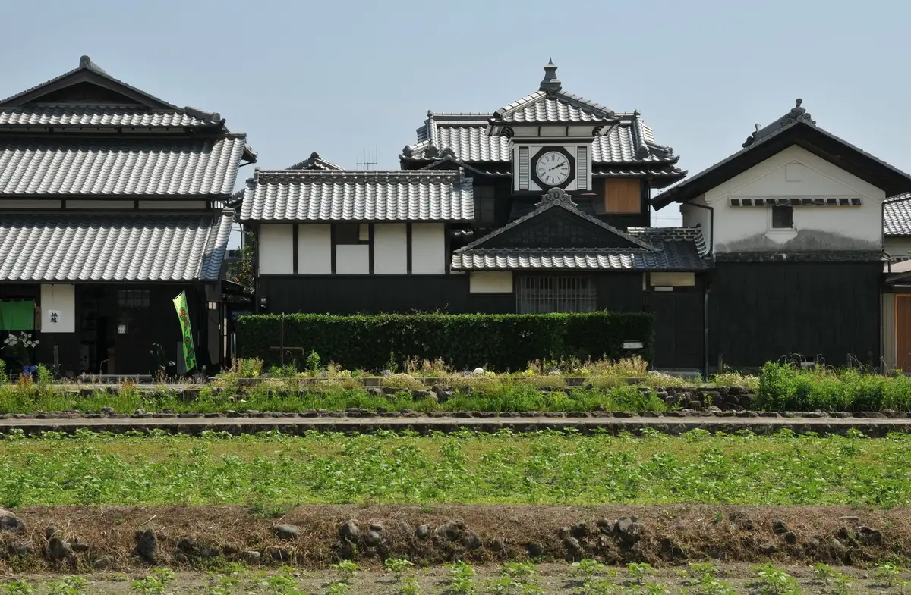
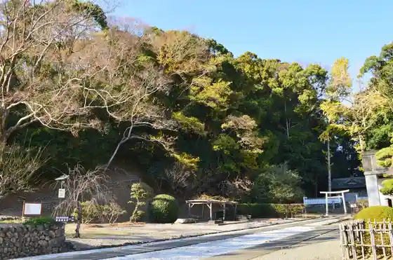
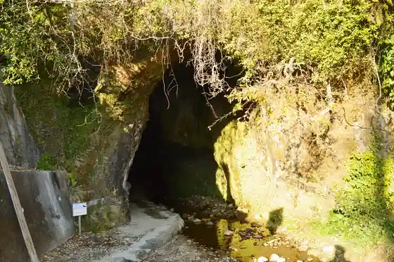
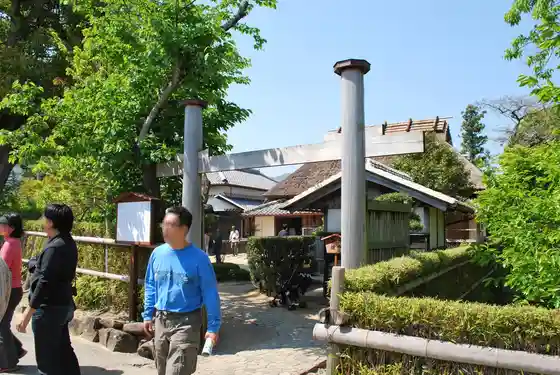

Aki
Aki · Kochi
Aki
Highlighted on the Kochi map.

Stay
Hotel TAMAI
Yama to Ie Ryokan
Hitomune Tai Yado Uen uen
Jiro no Ochi
Private villa YUHIMI Yuhi Ken no Oka
VILLA URARA THE COAST
Bijinesu Hotel Bencho
Dining
Shoku Shuka KITENA
Appuru
Hyakunin Ichi Sake
Merii Garden Kafe
Terao Sengyoten
Shienu
Hareshoku Do
Yokota Bekariinapori
Jasuto
Wajiki Ya Bunten
Kafe Hara no
Kuni Tora Ya
Hamako Aki Mise
Izakaya Yako Tora
Ichion Tomoshibi
Risubon
Experience
Aki Shodo Art Museum
Sights
Nora Tokei
Aki Castle Ruins

Ioki Hora

Iwasaki Yataro Seika

Aki Eki
Aki Ritsu Folk History Museum